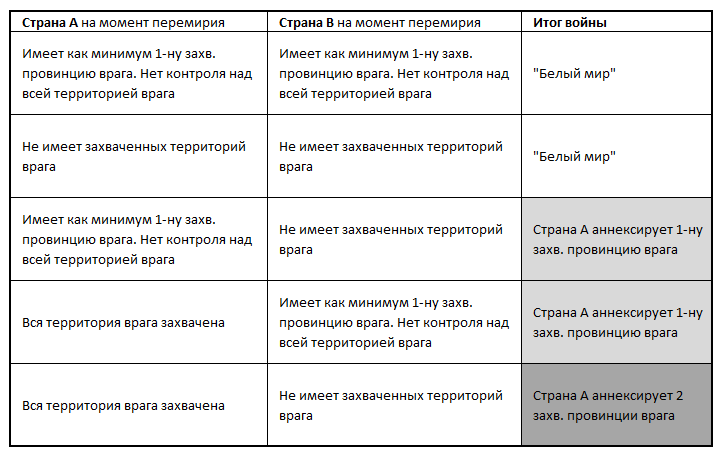

Дипломатия в игре представляет собой набор действий и систему отношений между странами-игроками и АИ-странами.
Все доступные в игре виды отношений между странами отражены в их балансах.
Внимание: Общее кол-во разрешенных дипломатических состояний не может превысить 20 (кол-во строк в балансе, фиксирующих дипломатические состояния не может быть больше 20-ти). Игроку следует правильно пользоваться этим ресурсом, продумывая сроки заключения договоров и предлагая своевременные усилия по изменению/расторжению данных договоров и т.п. Если ситуация в игре заставляет Ведущего вписывать обязательное состояние войны с иной страной при недостатке свободных строк в дип. записях, Ведущий вправе вписать «войну» вместо любой иной записи.
Каждая страна может иметь такое число союзов/вассалов, которое указано в её балансе и обычно соответствует дипломатическому рангу. При превышении этого лимита, страна получает ощутимый штраф.
Зависимая страна – находящееся в формальном подчинении от сюзерена государство. Отношения между ними строятся на простой основе – вассал уплачивает сюзерену дань в обмен на его защиту.
Вассалом может стать только страна ниже по рангу по отношению к сюзерену.
Добровольный вассалитет возможен между соседями по суше (1 м/з) или странами одной культурной группы. Навязанный вассалитет можно установить по итогам выигранной войны. Нельзя оформить добровольный вассалитет в отношении страны, равной или выше по статусу с сюзереном. Добровольный вассалитет устанавливается не менее чем на 10 ходов или бессрочно. Навязанный вассалитет по итогам войны устанавливается на 20 ходов.
Нельзя добровольно становиться вассалом другого государства, если страна воюет.
Вассал не может разорвать вассальный договор иначе, чем объявить войну своему сюзерену. Сюзерен может добровольно расторгнуть вассалитет с вассалом, но в таком случае вассал на 5 ходов получает КБ против бывшего сюзерена (страны не могут повторно оформить вассальные отношения до истечения данного срока).
Если вассалитет установлен на определенный срок по итогам войны, то по истечении данного срока вассалитет разрывается без штрафа для обоих сторон. В остальных случаях вассалитет устанавливается без ограничения срока.
Вассал не может начинать войны по своей инициативе и заключать союзы с третьими странами.
Сюзерен, принявший вассала под своё покровительство может отказаться от этого в любой момент.
Государства не могут одновременно выступать и как сюзерен, и как вассал. Если страна, имеющая вассала, сама стала вассалом третьей страны, она автоматически предоставляет независимость своим вассалам.
Страна, ставшая вассалом, расторгает ранее заключенные союзы с третьими странами со штрафом -0,5 стаб/договор.
Страны могут совершать сделки по уступке друг другу территорий. Продавать или иным образом отчуждать принадлежащую государству провинцию в пользу другого государства можно не более 1 провинции в ход. При этом соблюдаются следующие правила:
• Уступаемая провинция должна граничить по суше с государством, которому она будет уступлена или находиться не дальше, чем через 1 м/з.* (т.е. провинцию с побережьем, выходящим на берег соседней м/з).
• Если уступаемая провинция обладает культурой страны, которой такая уступка будет совершена, то сделка возможна, при любом отдалении от территории страны-покупателя.
Игроки самостоятельно договариваются о цене сделки.
Если страна находится в состоянии войны, то она не может совершать никаких сделок по приобретению/отчуждению территорий.
Передача провинции от одной страны другой влечет снижение стабильности у передающего гос-ва на -1 стаб.
Союз – это обязательство помогать союзнику в войне.
При оборонительной войне все союзники и вассалы страны автоматически вступают в войну на стороне союзника/сюзерена, в т.ч. иные вассалы (если имеют место быть) сюзерена атакованного вассала. Все вступившие в войну в этом случае не получают штрафа к началу войны.
Если война объявлена вассалу, то автоматически вступают в войну сюзерен и другие его вассалы.
При наступательной войне (когда один из участников союза начинает войну против третьей страны) все члены союза вступают в войну по умолчанию. Каждый факт начала наступательной войны каждым членом союза оценивается на наличие штрафа (КБ) и может влечь штраф, если КБ нет. Если союзник (в заявке хода, в котором такая война началась), заявляет о невступлении в начатую наступательную войну, его союз расторгается (без штрафа к стабильности), но отвергнутый союзник получает на него КБ на 5 ходов (страны не могут повторно оформить союзные отношения до истечения данного срока).
Кроме того, при начале наступательной войны страна может заявить в заявке о том, что не вовлекает в данную войну своих союзников. В таком случае его союзы, имевшие место на момент начала войны, остаются в силе, но союзники не могут в дальнейшем вступить в начатую войну.
Вассалы вступают в начатую наступательную войну автоматически на стороне сюзерена (без штрафа к стабильности).
Новые союзы не оформляются, если страна находится в состоянии войны. Старые союзы нельзя расторгнуть по взаимному согласию, если союзники ранее вступили в одну войну и эта война продолжается.
Союзники автоматически пользуются проходом по территории друг друга и своих вассалов без оформления транзитного договора.
• Транзитные договоры (дают право перемещения войск по территории другой страны). Транзитный договор не дает права заходить в города страны-транзитера.
• Перемирие. Заключаются на 5 ходов. Договором о мире могут определяться условия о выплате контрибуции, передаче территорий и др.
• Пакты о ненападении. Нарушение пакта о ненападении ведет автоматически к снижению на -0,5 стаб. у страны-нарушителя, если страна не имеет возможности делать данные шаги без штрафа
• Гарантии. Гарантия – одностороннее обязательство вступить в войну на стороне государства, если на неё совершено нападение третьей стороной. Гарантия действительна только в том случае, если озвучена публично в группе после итогов хода. На след.ход в заявке Игрок указывает о выдаче объявленной ранее гарантии. После дачи Гарантии, если на гарантированное государство совершено нападение, страна-гарант должна не позднее след.хода вступить в войну с агрессором. В противном случае Гарантия «сгорает», а страна-гарант получает штраф -1 к стаб.
Ведущий сообщает в итогах хода об объявленных войнах, заключенных мирных договорах, заключенных союзах между странами и выданных гарантиях.
Для любых видов соглашений основной формой их ратификации является подтверждение в заявке. Если подтверждение в заявке отсутствует, то сторона дезавуирует свое намерение совершить дипломатическую сделку, даже если об этом она заявила публично на форуме/в чате и личной переписке.
Война – состояние противостояния между двумя и более странами, заключающееся в возможном применении против врага вооруженных сил, захвате территории врага, вплоть до его аннексии.
Состояние войны фиксируется в сводке дипломатических отношений.
Начало войны может влечет снижение стабильности, если не соблюдены условия, исключающие такой штраф.
Союзник, располагающий свои войска на территории страны-союзника для защиты его границ от несанкционированного прохода/ввода войск третьих стран автоматически вступает в войну, если его войска вступили в бой с войсками третьей страны при осуществлении такого прохода/ввода.
Сasus belli — это формальный повод для объявления войны, который ни при каких обстоятельствах не влечет потерю стабильности для страны, объявившей войну, а также отменяющий причины, по которым война не могла быть начата (разрыв перемирия, например).
Стандартный срок для КБ — 3 хода.
КБ имеется вследствие:
1) Наличия у врага провинций/городов с титульным для страны этносом (постоянный КБ).
2) Войны против сепаратиста (если в предшествующий ход часть территории страны отделилась от гос-ва по ивенту с образованием нового гос-ва или присоединилась к др.стране). КБ действительно 3 хода.
3) При нападении третьей стороны на вассала/союзника.
4) Осуществления пиратства против данной страны.
Продолжительность войн:
Войны длятся 10 ходов, если ни одна из сторон заявляет о перемирии. Длительность войны определяется по ходу первого акта военных действий. Если к войне присоединились другие страны-союзники, то продолжительность войны не продлевается.
Война длится либо до:
1) Достижения перелома в войне против любой из стран, участвующих в войне;
2) Достижении 10 ходов с момента её начала (т.н. перемирие);
3) Достижении соглашения об окончании войны.
Перелом в войне — если одна сторона (в т.ч. совместно с ее союзниками) захватила более 50% провинций или город-столицу другой страны.
Если перелом достигнут против одной из стран альянса (в т.ч. против вассала сюзерена принимающего участие в войне), то она мирится сепаратно, разрывая тем самым союз. Остальные страны продолжают войну, если не договариваются о мире.
При достижении перелома в войне победитель вправе (или/или):
1) Объявить проигравшее войну государство своим вассалом. Если контроль над провинциями проигравшей страны осуществляют две и более страны-союзницы, то правом ее подчинения обладает страна, контролирующая столицу противника, либо любой другой участник союза по соглашению между ними. Вассалитет в этом случае устанавливается на время перемирия (5 ходов).
2) Потребовать территориальных уступок - см. ниже.
Если в ходе войны был захвачен город без провинции, то он не может быть аннексирован. Если аннексированная провинция является столичной, то столица проигравшей страны переносится в другую провинцию/город. Если в войне участвовала коалиция стран, то указанные последствия имеют силу в отношении одной из стран союза по договоренности.
3) Потребовать контрибуцию – см.ниже.
При достижении одной стороной войны перелома, второй стороне предоставляется следующий ход для ответных действий. Только если по итогам след. хода состояние перелома будет сохранено победитель вправе выдвинуть указанные выше требования к проигравшему.
Окончание войны по истечению 10-ти ходов. Если война длится 10 ходов, то любая сторона вправе выдвинуть требование о перемирии.
Если на момент введения перемирия сторона имеет (на основании факта оккупации территории врага) право на аннексию территории врага (см. таблицу), то она вправе заявить об этом. В противном случае война завершается «белым» миром.
Таблица территориальных уступок:
Если проигравшая страна имеет не более 1-й столичной провинции, то её аннексия невозможна за исключением следующих случаев:
1) Страна-победитель имеет «особое» право на такую аннексию в силу изученной нац. идеи или выполненной миссии;
2) Проигравшей страной является страна-сепаратист, отколовшаяся от страны-победителя не позднее чем за 3 хода до этого.
При заключении перемирия стороны обязаны вывести до окончания срока перемирия войска с чужой территории до окончания перемирия. В противном случае они будут принудительно распущены.
Требование о перемирии распространяет свое действие на все страны, входящие в союз, ведущие совместно войну.
Перемирие может быть отменено стороной, чей союзник/вассал был атакован второй стороной перемирия во время его действия.
Посольства открываются с согласия принимающей стороны.
Страна, принявшая у себя посольство другой страны вправе закрыть его в любой момент без объявления причин, в т.ч. при начале войны между данными странами.
Посольства повышают шанс на успех осуществления в этой стране шпионских миссий. Кроме того, наличие посольства позволяет получить положительный эффект (+кт/о, +н/о) при реализации некоторых нац.идей и миссий.
Стоимость содержания Посольств зависит от удаленности страны.
Игроки могут выделять из состава своих стран новые государства. Новая страна по форме правления будет идентична материнской, господствующий этнос и религию нового государства определяет игрок.
Новые страны становятся вассалами материнского государства, если Игрок не пожелает создать независимую страну. В состав выделяемого государства могут быть переданы 1-2 провинции. Нельзя создавать более одного государства в ход и свыше общего лимита стран, предусмотренных игрой.
Управление новой страной-вассалом осуществляет игрок, получая Баланс страны и делая за нее ходы в обычном порядке. При появлении свободного игрока по решению Ведущего такая страна может быть передана под управление игроку.
Если страна ведет войну, то создание ею новых государств (по аналогии со сделками купли-продажи провинций), не допускаются.
Выделение страны из состава государства влечет потерю -1 стаб.
АИ-вассал не может быть размером больше 2 провинций.
Контрибуция — платеж, налагаемый на проигравшее государство в пользу государства-победителя.
Контрибуция является одним из альтернативных вариантов последствий окончившейся войны.
Предельный размер контрибуции, который можно наложить на проигравшее гос-во не может превышать 15% от суммы его капитализации (указано в балансе). Выплата контрибуции осуществляется в приоритетном порядке для проигравшего. Пока проигравшее государство не выплатит всю сумму — оно не вправе отдавать приказы на строительство и найм войск. Если к концу перемирия (5 ходов) проигравший не рассчитается полностью с победителем, то недостающая сумма взимается за счет увеличения инфляции.